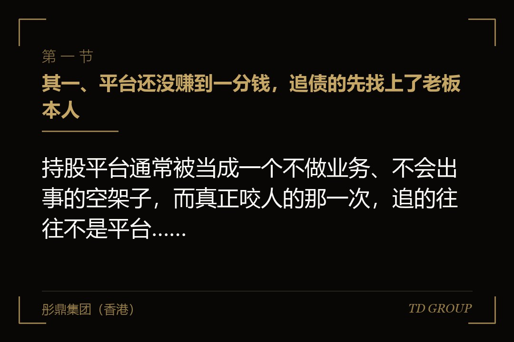
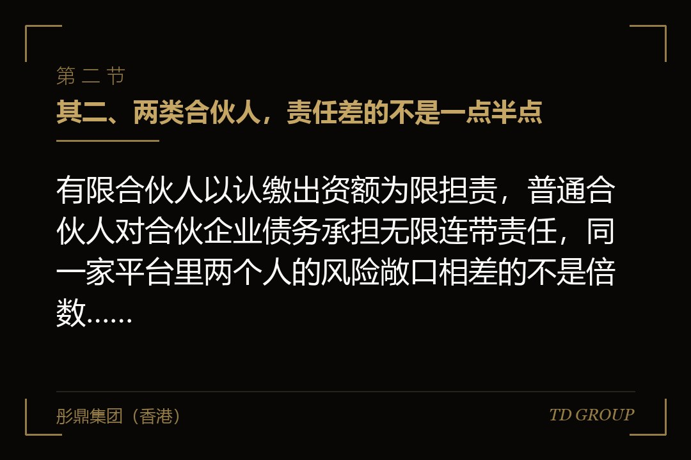
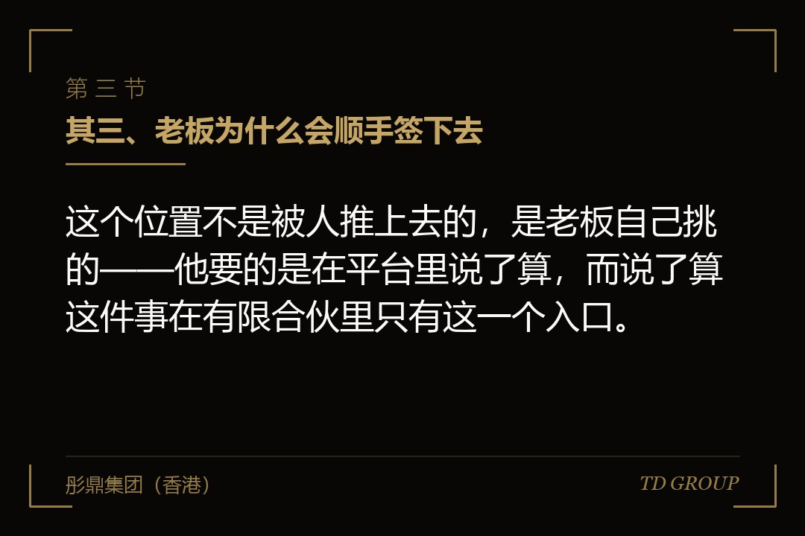

其一、平台还没赚到一分钱，追债的先找上了老板本人

结论先行：持股平台通常被当成一个不做业务、不会出事的空架子，而真正咬人的那一次，追的往往不是平台，是坐在普通合伙人位置上的老板个人。
假设有家做智能仓储设备的公司，四年前搭了个员工持股平台，形式是有限合伙。老板本人出资一万块当普通合伙人，十九名核心员工合计出资九十九万当有限合伙人，平台持有经营公司百分之十二的股权。
搭这个结构的理由很朴素：如果做成有限公司，十九个人就是十九个股东，表决按出资比例走，将来有人闹起来不好办；做成有限合伙，普通合伙人执行合伙事务，老板一个人就能代表这百分之十二投票，员工只出钱不管事。
第三年，公司引入一轮融资，投资人要求平台里几名离职员工退出，平台按当初的协议回购这几个人的出资，回购款分两期付。头一期付了，第二期赶上公司资金紧张，拖了下来。
其中一位离职员工起诉，被告栏里列了两个名字：平台，以及老板本人。他的理由很简单——普通合伙人对合伙企业的债务承担无限连带责任，平台还不上，就该由他还。
老板的反应是"我在这个平台里只出了一万块钱"。这句话在有限公司里成立，在有限合伙的普通合伙人身上不成立。出资额限定的是有限合伙人的责任，跟他这个位置没有关系。
其二、两类合伙人，责任差的不是一点半点

结论先行：有限合伙人以认缴出资额为限担责，普通合伙人对合伙企业债务承担无限连带责任，同一家平台里两个人的风险敞口相差的不是倍数，是性质。
有限合伙人这一侧比较好理解，它跟有限公司股东的感觉接近：认缴多少就担多少，缴清了之后平台再欠钱也追不到个人。代价是不执行合伙事务，也不能对外代表企业。
普通合伙人这一侧是另一回事。合伙企业不能清偿到期债务的，普通合伙人承担无限连带责任——无限是说不以出资额为限，连带是说债权人可以不先追平台、直接找他，也可以在几名普通合伙人里挑一个追足全额。
还有两条时间上的延伸，很多人不知道。入伙之前的债务，新入伙的普通合伙人一样要担。所以中途接手这个位置的，接的不只是往后的事。
退伙之后也不是干净的。对退伙前的原因所发生的合伙企业债务，退伙的普通合伙人仍然承担无限连带责任。换句话说，发现风险再退出来，退的是位置，退不掉已经形成的那部分责任。
还有一条容易被忽略：有限合伙人如果参与执行合伙事务、对外代表企业，让第三人有理由相信他是普通合伙人并与其交易，那笔交易上他要承担与普通合伙人同样的责任。所以"名义上是有限合伙人、实际上什么都管"是一种很危险的状态。
其三、老板为什么会顺手签下去

结论先行：这个位置不是被人推上去的，是老板自己挑的——他要的是在平台里说了算，而说了算这件事在有限合伙里只有这一个入口。
回到搭平台那一天。摆在老板面前的选择通常是三个：做成有限公司、做成有限合伙由自己当普通合伙人、做成有限合伙请外部机构当普通合伙人。
选有限合伙的理由是决策效率。有限公司里，股东会按出资比例表决，十九个员工加起来的比例可能不低，公司章程要写得很细才能把表决权集中起来。有限合伙不用绕这一圈，普通合伙人执行合伙事务是法律直接安排的，协议再补两句就够了。
而普通合伙人为什么是他自己，理由更简单：外面找一家机构来做，要付管理费，要谈决策权怎么分，还要担心对方换人。自己上，一分钱不花，说了算，注册那天在窗口签个字的事。
签的时候没有人把责任那一页念给他听。工商登记的表格上，普通合伙人和有限合伙人只是两个勾选框；协议模板里那句"普通合伙人对合伙企业债务承担无限连带责任"，读起来像是一句法条抄录，不像是在说他自己的房子。
真正的问题在于时间差。决策权的好处是当天就能感觉到的，无限责任的代价要在三五年后某一次纠纷里才会出现，而那时候平台早就搭好、股权早就装进去、改动的成本已经不是当初那个量级。
其四、执行事务合伙人和普通合伙人，不是同一个概念
结论先行：普通合伙人说的是责任身份，执行事务合伙人说的是管理职务，一个人可以只是普通合伙人而不执行事务，但无限责任照样落在他身上。
这两个词在日常对话里经常混着用，实务里差别很清楚。普通合伙人是合伙人的类别，决定的是对外承担什么责任。执行事务合伙人是从普通合伙人里选出来对内管理、对外代表企业的那一个或者几个。
由此产生一个常被误解的结论：不当执行事务合伙人，是不是就不用担无限责任了？不是。执行事务的身份可以委托给别的普通合伙人，责任身份不会跟着一起转走。想摆脱无限责任，可行的路只有一条，就是不做普通合伙人。
反过来的误解也存在：有的老板以为自己在协议里写了"不参与日常管理"，就等于把风险交出去了。这句话在合伙人内部的责任分担上或许有意义，对外部债权人没有约束力——债权人依据的是工商登记上的合伙人类别，不是内部协议。
登记这件事值得单独说一句。合伙企业的登记事项里会载明各合伙人的类别，这是公开可查的。所以"我以为我是有限合伙人"这种误会，通常在打开登记信息的那一分钟就结束了。
其五、平台会从哪几个口子欠上债
结论先行：持股平台不做业务，所以看着不会欠债，但实务上它至少有四个口子会形成对外债务，每一个都很常见。
口子一是回购与补偿义务。员工离职退出、投资人要求特定人员退出、业绩没达标要按协议补偿，这几种情形下平台是付钱的一方。开头那家智能仓储公司踩的就是这一个。
口子二是代持关系破裂。平台里的出资常常存在代持——有人替离职同事继续持有、有人替不方便具名的人代持。一旦被代持人主张权利，返还与赔偿的责任会落到平台，而平台通常没有现金。
口子三是转让环节的税款与滞纳金。平台减持或者转让所持股权时，涉及的税款金额往往不小；合伙企业本身不缴纳企业所得税，所得穿透到各合伙人分别纳税，但申报与代扣代缴的义务在平台这一端。申报口径出现争议、税款没有按期缴纳，滞纳金按日计收，这笔债务的形成完全不需要平台做任何业务。
口子四是对外担保。有的公司在向银行或者供应商融资时，会让持股平台一并签个担保。签的时候觉得平台是自家的、走个形式，真出事的时候担保责任是实打实的，而担保责任落到平台，就等于落到普通合伙人身上。
这四个口子有一个共同点：它们都不是"平台经营失败"造成的，而是平台作为一个法律主体被卷进了别人的事。所以"平台不做业务所以不会出事"这个判断，从前提上就不成立。
其六、拿一家小公司去当普通合伙人：管用，但不是每次都管用
结论先行：让一家注册资本很小的公司去坐普通合伙人的位置，是最常见的补救，它能挡住多数情形，挡不住三种。
做法本身很简单：新设一家有限公司，注册资本几万到几十万，由老板持股并担任执行董事，再由这家公司担任平台的普通合伙人与执行事务合伙人。这样一来，无限连带责任落在这家小公司身上，而老板作为这家小公司的股东，责任以其认缴出资为限。
法律上这条路是通的——法人可以担任普通合伙人，只是国有独资公司、国有企业、上市公司以及公益性的事业单位、社会团体不得成为普通合伙人。多数民营企业的持股平台不受这条限制。
挡不住的情形有三种。其一是人格混同。这家小公司没有独立账户、没有独立账簿、资金跟老板个人账户混着走、办公场所与人员完全依附于经营公司，被认定为人格混同时，隔离的那一层就不存在了。
其二是出资没有到位或者被抽走。注册资本认缴一百万、实际一分没缴，公司欠债时股东要在未缴出资范围内补足；缴了之后又转回自己账上的，性质更重。所以这家公司的注册资本不是越小越好，而是要跟平台可能形成的债务规模有个说得过去的关系，并且实际缴到位。
其三是老板另行签了个人担保。这一条最冤：结构做得很干净，结果在银行或者投资协议那边，老板本人签了一份连带责任保证。绕了半天的那一层，被一张签字表格直接穿过去了。
还有一个时点问题要提醒：这个补救对已经形成的债务没有追溯效力。变更普通合伙人之后，原来的普通合伙人对退伙前原因发生的债务仍然承担无限连带责任。所以这件事的价值在于早做。
其七、要不要干脆改成有限公司：三种情形三个答案
结论先行：有限合伙的好处是决策集中和所得穿透，代价是普通合伙人的无限责任，值不值得换成有限公司，取决于平台将来要干什么。
情形一：纯粹的员工持股平台，人数不多，将来主要是分红与少量退出。这种情形改成有限公司通常划算。表决权集中的问题可以靠章程与一致行动约定解决，而换来的是所有股东都以出资为限担责，包括老板自己。
情形二：平台承担了回购、对赌或者担保义务。这种情形下，无限责任的敞口是实打实的，要么改成有限公司，要么至少把普通合伙人换成前一节说的那家小公司，两件事选一件，不能都不做。
情形三：平台将来要参与股权投资，或者可能被并入基金结构。有限合伙在这类安排里有它的道理，所得穿透、分配灵活、进出方便，改成有限公司会多一层企业所得税。这种情形下合理的选择通常不是改形式，而是把普通合伙人的位置腾出来，交给一家干净的持股公司。
改与不改之外，还有几件成本很低的事随时可以做：把平台的银行账户、账簿与老板个人的彻底分开；把平台对外担保这件事列为需要全体合伙人一致同意的事项；以及每年查一次平台的登记信息，确认自己的合伙人类别没有在某次变更里被改掉。
华尔街彤鼎俱乐部里有位做检测服务的会员说过一件事：他做了三个持股平台，直到第三个才知道自己在前两个里的身份是什么，而那两个平台的合伙协议都是他自己签的字。
其八、收口：今天下午就能查清楚的六件事
结论先行：下面这六件事不需要请律师、不需要开会，一台能上网的电脑半个下午就查得完，查完就知道自己现在站在哪个位置上。
其一，打开每个持股平台的登记信息，看自己是普通合伙人还是有限合伙人。凭印象回答的那份，实测经常是错的。
其二，看普通合伙人这一栏写的是本人还是一家公司。写的是本人的，往下五条都要认真看；写的是公司的，重点看第四条。
其三，把平台可能欠债的四个口子对一遍。有没有回购或者补偿义务、有没有代持、有没有待缴的税、有没有对外担保签过字。四个里中一个，就不是理论问题了。
其四，如果普通合伙人是一家公司，查它的注册资本缴没缴、有没有独立账户与账簿。这两样缺了，那层隔离在真出事时未必站得住。
其五，翻一遍自己近三年签过的连带责任保证。结构做得再干净，一张个人担保就能穿过去，而这类签字通常发生在急着放款的场合，事后很少有人回头清点。
其六，看合伙协议里对外担保和重大处分需不需要全体一致同意。没有这一句的，意味着执行事务合伙人一个人就能给平台背上债，而背上的债最终连着谁，前面已经说清楚了。
六件事里，前两件决定要不要往下看，中间三件决定风险有多大，最后一件决定往后会不会再出新的。做完这六件，再去谈改不改结构，才是有依据的谈法。
本文为企业上市与公司治理知识分享，面向企业经营者，不构成任何投资建议或证券投资咨询服务，也不构成对任何证券的买卖推荐。相关规则以监管机构正式文本为准。